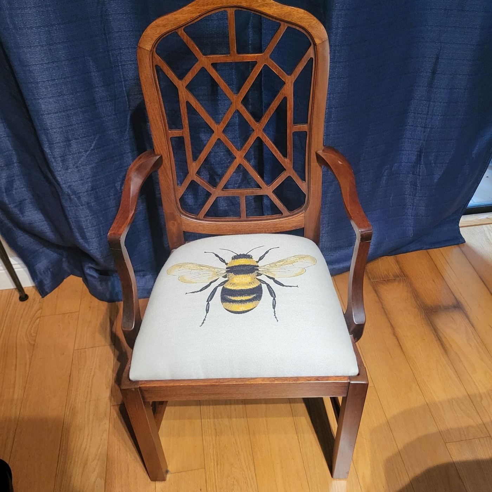
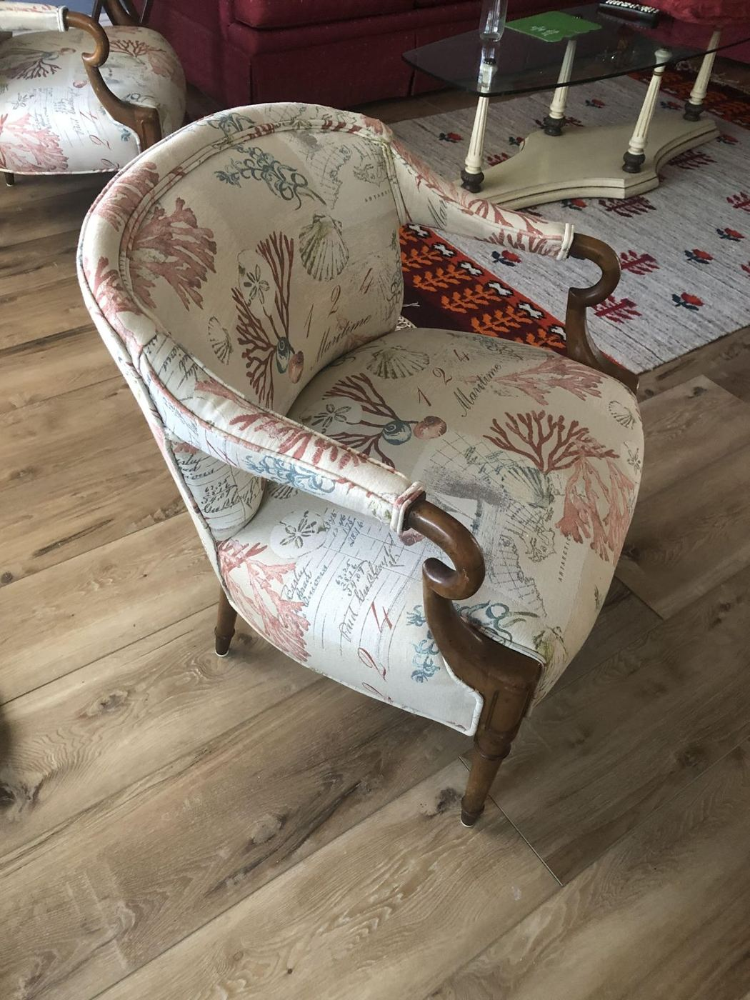
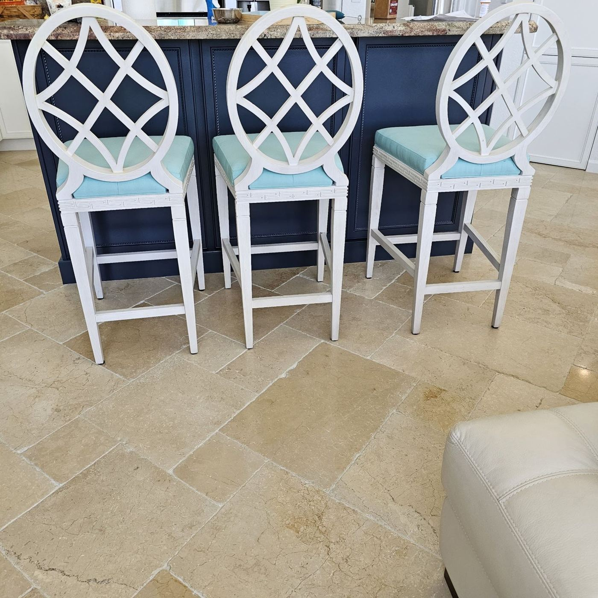

Chairs, sofas & second lives



Orlando Cabrera’s upholstery shop on Okeechobee Blvd, West Palm Beach. 4.9★ from 63 Google reviews.
Services
Dining & accent chairsSeats recovered — including custom prints.
SectionalsLarge coastal sectionals completely redone.
Bar stoolsSets brought back to life together.
In-home visitsOrlando comes out to measure and check the work.
Quotes by textSend a photo, get a quote back quickly.
In their words
“Excellent work on my Tommy Bahamas host chairs. Friendly and prompt service. They were actually ready a day earlier than I re quested. Thank you!”
“Wow! Where do I even begin. Orlando is a true artist and perfectionist!!!! His work is incredible. My massive coastal white sectional was completely reupholstered by his team and looks brand new. It’s as perfect as the day it arrived after I purchased it years ago. When he delivered it to my home, I was in awe and disbelief. Orlando has been stored in my cell and will be shared with all my family and friends who need any upholstery services. FIVE STARS and THANK YOU!!!!”
“I found Orlando when I was driving behind his truck on Okeechobee Blvd. I called him for a quote on 4 kitchen chairs. I texted him a pic and he replied with the quote, very efficient. Did a great job on the kitchen chairs, so a few months later I brought him my dining rooom chairs, which came out beautiful. Orlando and his team do excellent work. He even added some pipping around on the dining chair seats which added a very nice touch. Quality workmanship, fair pricing, and excellent to deal with. Highly recommend Orlando and team and I have more projects coming his way!”